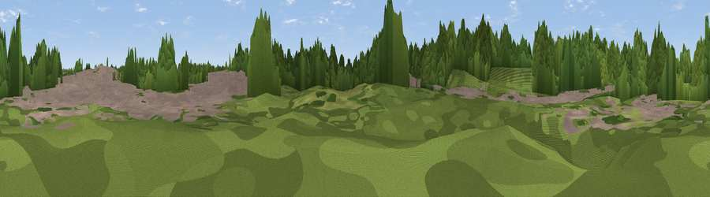

Pouk Hill
#46274 in England · top 99% of its area beats it · near Walsall · access?Where it is
The exact computed spot (SO 99200 99670). Click the marker for map links.
Public access: no public right of way or access land is recorded at this exact spot — it may be on private land. Computed from Natural England's CRoW access layer and OpenStreetMap rights of way — not the legal definitive map. Always verify locally.
The view, rendered

A 360° render of this exact spot computed from the terrain model, tree cover and land cover — summer colours, afternoon light, calibrated against photographs of famous viewpoints. Real trees, hedges and buildings will differ in detail.
The panorama
Grey silhouette: terrain skyline in each direction (720 bearings, Earth curvature and refraction included). Dashed green: skyline with trees (+15 m) and buildings (+8 m) as obstacles. Blue strip: how far the ground is visible on each bearing.
Where the view opens
Wedge length = distance to the farthest visible ground on that bearing (vegetation-aware). Rings at 10, 25 and 50 km.
What fills the view
54% woodland · 36% built-up · 10% grassland ·
Angular shares of the visible panorama (visual magnitude), not map area. Landscape diversity 0.43 (0–1 Shannon).
Key numbers
More beautiful places nearby
The staircase of upgrades: each row has a higher view potential than everything closer. Driving times are estimates from straight-line distance, calibrated against real road routing — check an actual route before setting out.
| Place | Direction | Drive | Score |
|---|---|---|---|
| Church Hill | ESE · 3 km | ~7 min | 10.6 |
| Viewpoint near Wednesbury | S · 4 km | ~10 min | 18.7 |
| Essington Hill | NW · 6 km | ~12 min | 26.1 |
| Viewpoint near Featherstone | NW · 6 km | ~13 min | 51.9 |
| Viewpoint near Hilton | NW · 7 km | ~14 min | 53.3 |
| Viewpoint near Streetly | ESE · 7 km | ~15 min | 69.5 |
| Viewpoint near Clent | SSW · 20 km | ~34 min | 73.8 |
| Viewpoint near Clent | SSW · 20 km | ~34 min | 74.3 |
52.59483, -2.01325 · source: osm peak · position refined by local search. Computed location — check access rights before visiting.